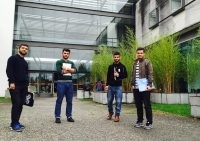

A KOU Teaching Staff Got a Deposited Paper to the SPIE Deference + Commercial Sensing Digital Forum
Dr. Rasber Dh. Rashid from the Department of Software Engineering, Faculty of Engineering at Koya University, presented a research paper in the Mobile Image Exploitation and Learning 2020 Conference and the
paper is deposited in the SPIE Deference + Commercial Sensing Digital Forum. The paper entitled "Cover Image Selection for Embedding Based on Different Criteria."
About the research paper:
Title: Cover image selection for embedding based on different criteria
Author: Dr. Rasber Dh. Rashid
Deposit date: 21 April 2020
Place of deposit: SPIE
DOI: 10.1117/12.2560720
About the Conference:
Title: Mobile Image Exploitation and Learning 2020
Date: Monday - Friday 27 April - 1 May 2020
Place: Online.
----------
Koya University (KOU) is located in the city of Koya (Koy Sanjaq) which is 1.0 hr drive to the East of the Kurdistan Region capital Erbil (Arbil, Hewlér) in Kurdistan Region of F.R. Iraq. It is on the foothills of beautiful high mountain. Its campus has been carefully laid out to embrace the beautiful mountainous nature. . There are 4 Faculties and 2 Schools in KOU; Faculty of Engineering (FENG), Faculty of Science and Health (FSCH), Faculty of Education (FEDU), Faculty of Humanities and Social Silences (FHSS), Shcool of Physical Education (SPHE) and School of Medicine (SMED). Also, there are two research centers; Genome Center and Malai Gawra Center. Moreover, at KOU there is an English Language Center (BELC) at KOU has been opened with the sponsorship of IREX and American embassy in Baghdad as well as with the support of Spring International Language Center of The University of Arkansas. KOU has two Scientific Journals; ARO-The Scientific Journal of Koya University, which is indexed by Clarivate Analytics (ESCI), and Koya University Journal of Humanities and Social Sciences (KUJHSS). KOU is a proactive member of Erasmus/ Marhaba Project and Erasmus+. KOU signed many Memorandum of Understandings (MoU) with many International Universities, e.g., The University of Arkansas (June 2015). The Lulea University in Sweden (April 2014), The University of Nottingham in the UK, The University of Buckingham in the UK (Oct 2008), Belkin University in Turkey (Sep 2009) and The University of Greenwich in the UK.
Koya University Students Marhaba awardees at the University of Minho
After being awarded a one –year Erasmus Marhaba scholarship program,

four students from Koya University are now studying at the University of Minho in Portugal. The students point out the significance of Marhaba Project and deem it an ideal opportunity to study in Europe. They also refer to the experience they have gained and say that they have successfully made use of the situation and consider it a golden opportunity to learn. This report reveals their new life and situation in Portugal.
All is going well
The four students are enjoying their new life there. Talking about their living conditions and their academic life, Dana Ghafar, one of the students says, “Everything is going well with us; the staff of Minho University are very helpful and they offer their full cooperation to foreign students. We have been able to achieve a good academic level among our classmates.” He also states that apart from studying, they are trying to create a positive perception and image about Kurds among their foreign classmates and colleagues.
Acclimatization is by no means easy and human beings often find it difficult to get used to a completely new environment within a short period of time. Koya University students studying in Portugal find themselves in a completely new environment; however, they feel quiet comfortable because of the good treatment they receive from the university and the people there. Dana says, “We soon got used to the situation.” One of the amazing experiences the students have witnessed during their stay in Portugal was the help and kind treatment of the Portuguese people.
Gaining experience can be best achieved through interaction with people and through real life. In addition to academic benefits, these students have also enriched their life experience. In this respect, Dana says, "In addition to academic advantages, we have gained a lot of new experience in terms of learning about the culture, lifestyle, advancements and civilization of Portugal and other European countries; we have already visited several well-known countries like Germany, Spain, Netherlands because Portugal itself is a European country." Kurdistan Region has been undergoing unstable political and economic situations so that the government is currently unable to support the students who study abroad; therefore, Dana says, "With Kurdistan Region facing such hard crises, gaining all this experience would have been impossible if it was not for Marhaba Project."
ِA dream come true project
It has been two years since the government has suspended its financial support to students who study abroad because of the current financial crisis facing the Region. The Erasmus Mundus Project is a golden opportunity for Koya University staff members to secure seats in one of the European countries. Regarding this, Dana says “In such volatile political and economic situation that faces Kurdistan Region, we can call this project a dream come true project.” Having their dream come true, Dana expresses his and his friends' gratitude to Dr. Dilan M. Rostam, Vice President of Koya University, who helped them get this chance.
This year again Marhaba project has opened its door for new applicants. On Tuesday 24th November 2015 at 11 o'clock pm at the LT1000 hall of Koya University Presidency, a seminar was held for all the students and teachers of Koya University by Dr. Dilan M. Rostam, the University's Vice President for Scientific and Postgraduate Affairs where he explained Marhaba project and the practical steps for application. For more information click here.
Concerning this year's Marhaba Project, Dana, having gained experience in the project, advises his friends saying, ''For this year I advise my friends to be careful about university options because this has a lot of influence on their chance of success. I also advise them to choose those universities where study is in English language.''
Dana and his friends do not deny the role of those who helped them join this project. Concerning this, Dana says, '' We express our thanks and gratitude to Dr. Wali M. Hamad the President of Koya University, Dr. Mohammed H. Zangana, the Dean of the Engineering Faculty, and our department instructors Dr. Fuad M. Khoshnaw and Dr. Basim M. Fadhil the Head of the Manufacturing Engineering Department. They have all helped us join this project."
What is Marhaba Project?
Erasmus Mundus, known as Marhaba is an academic project sponsored by the European Union. The project includes18 universities around the world and it aims at culture exchange, and higher education development and learning among the partner universities.
For more information about the aims and objectives of this project click here.
Practical steps for application:
First read the instructions and conditions for application available in both Kurdish and English on Marhaba Website opened by the office of the Vice President for Scientific and Postgraduate Affairs. Then carefully fill in the application form and work on getting University approval along with some other procedures in cooperation with the Office of the Vice President for Scientific and Postgraduate Affairs. To visit the website click here
BY: Koya University Press Room
Translated by : Koya University Translation Unit (TRU)